01
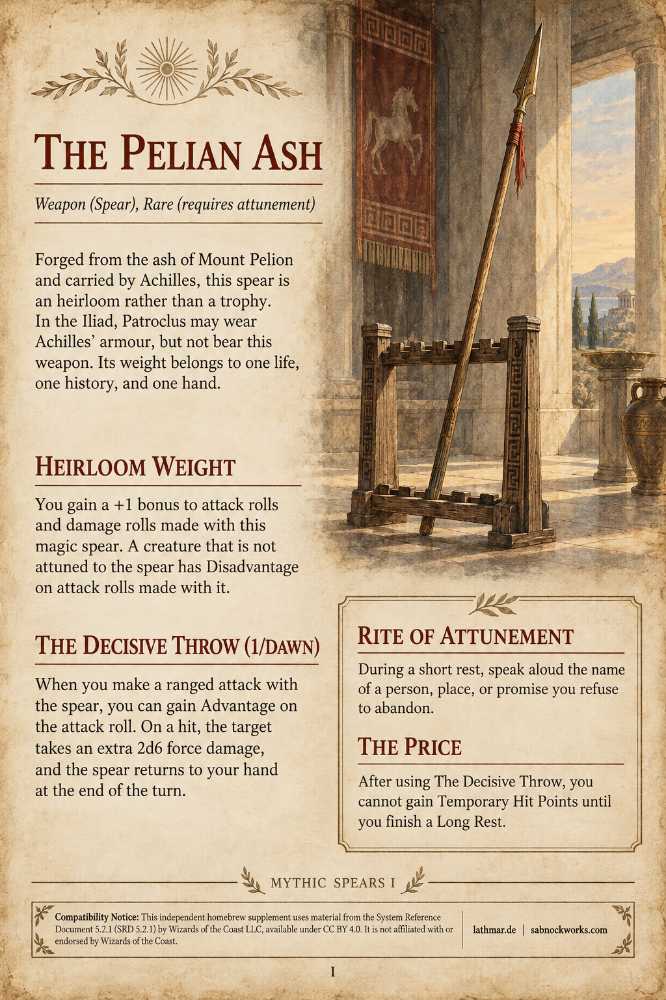
Mythic Spears I
The Pelian Ash
An heirloom spear inspired by Achilles' weapon: strong in the right hand, costly when its decisive throw is called upon.
The open drawer
Adventures from the myths of Freyr, fifth-edition-compatible weapons and dungeon campaigns inspired by ancient places. The four Freyr adventures are available in English and German.
Filed Under: Spears

Mythic Spears I
An heirloom spear inspired by Achilles' weapon: strong in the right hand, costly when its decisive throw is called upon.
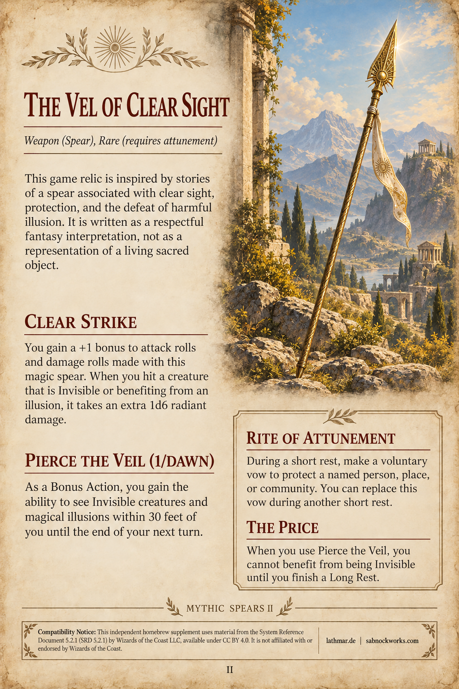
Mythic Spears II
A spear of protection and clear sight, written as a respectful fantasy interpretation rather than a representation of a living sacred object.
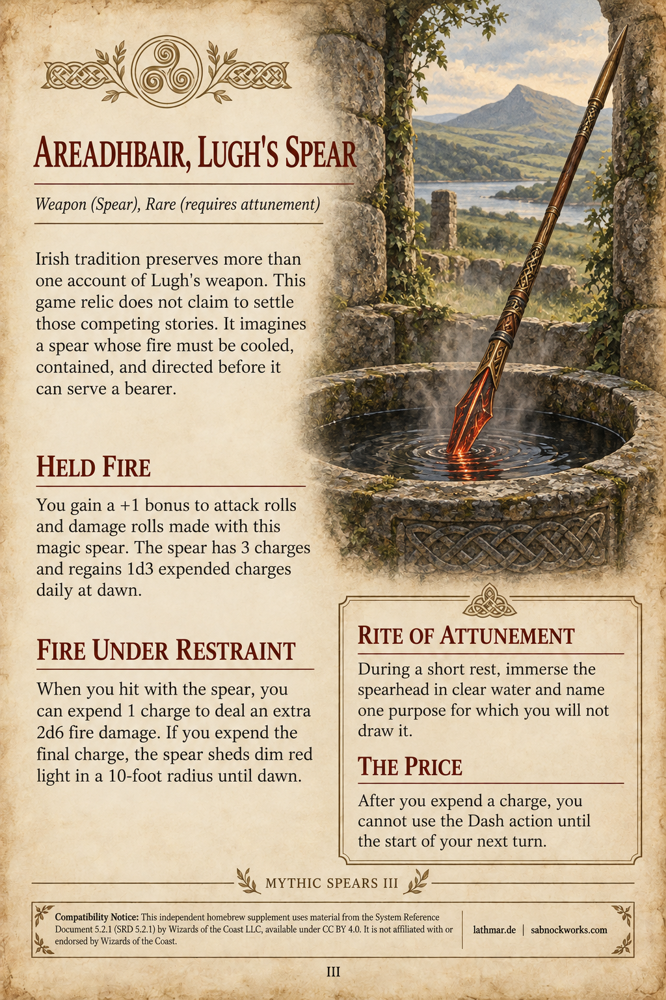
Mythic Spears III
A weapon of contained fire whose charges reward purpose, restraint, and the patience to cool power before drawing it.
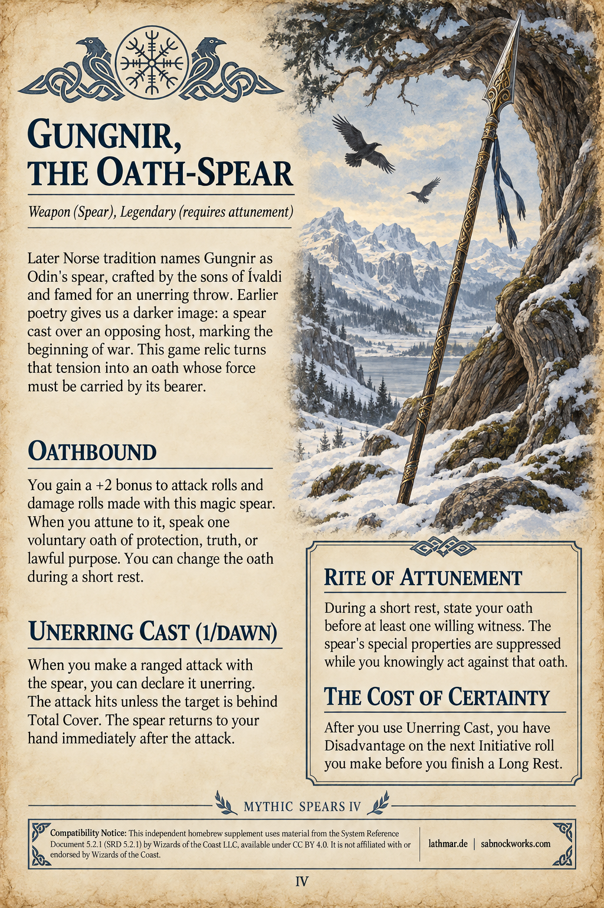
Mythic Spears IV
An oathbound spear for bearers who will accept certainty only at the price of being held to the promise they make.
Lore & Quest Material
Five journeys into real and remembered places where history, myth, refuge, ritual, and absolute order become material for the game table.
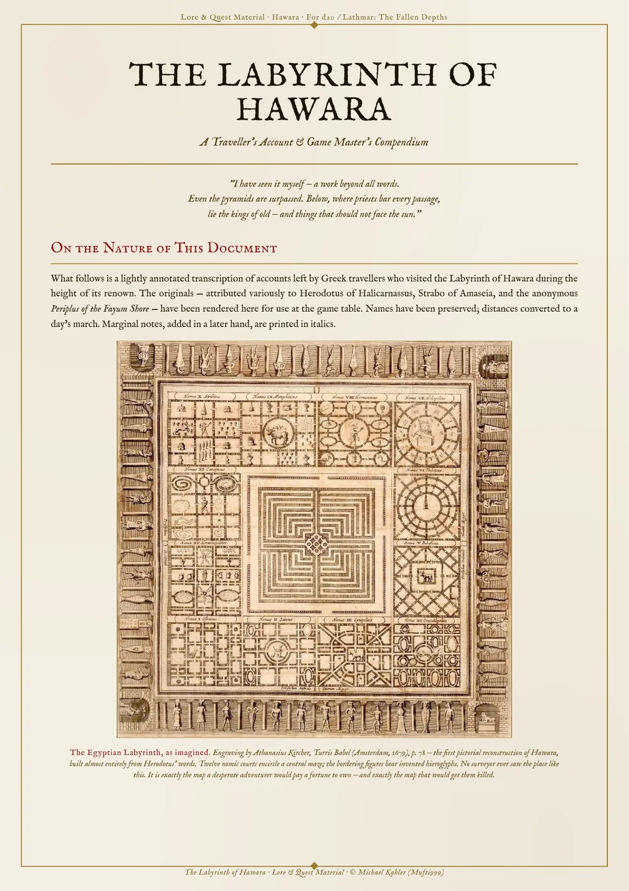
Ancient Mega-Dungeons I
A traveller's account of Egypt's vanished labyrinth, followed by expedition hooks, a dungeon campaign framework, and encounters for the deep levels.
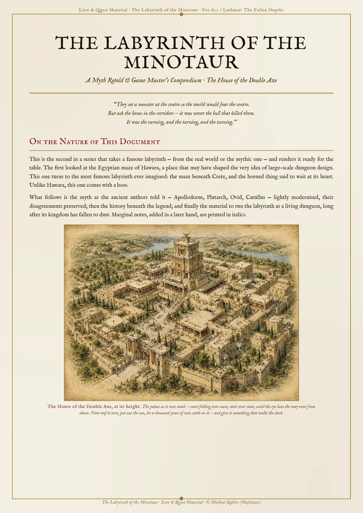
Ancient Mega-Dungeons II
The Cretan myth retold beside its historical foundations, with reasons to enter, a runnable maze, rules for getting lost, and wandering encounters.
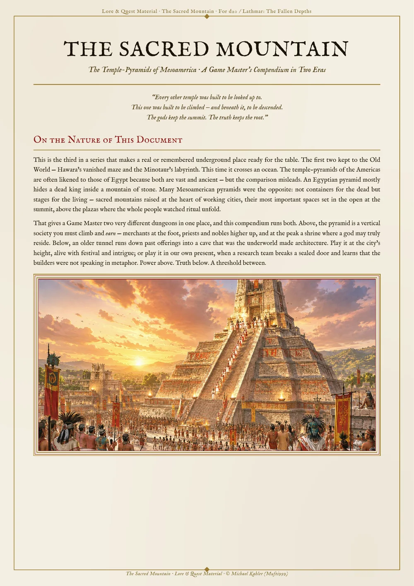
Ancient Mega-Dungeons III
A two-era compendium for climbing a living Mesoamerican temple-pyramid or descending beneath it, with ancient and modern hooks, dangers, and encounters.
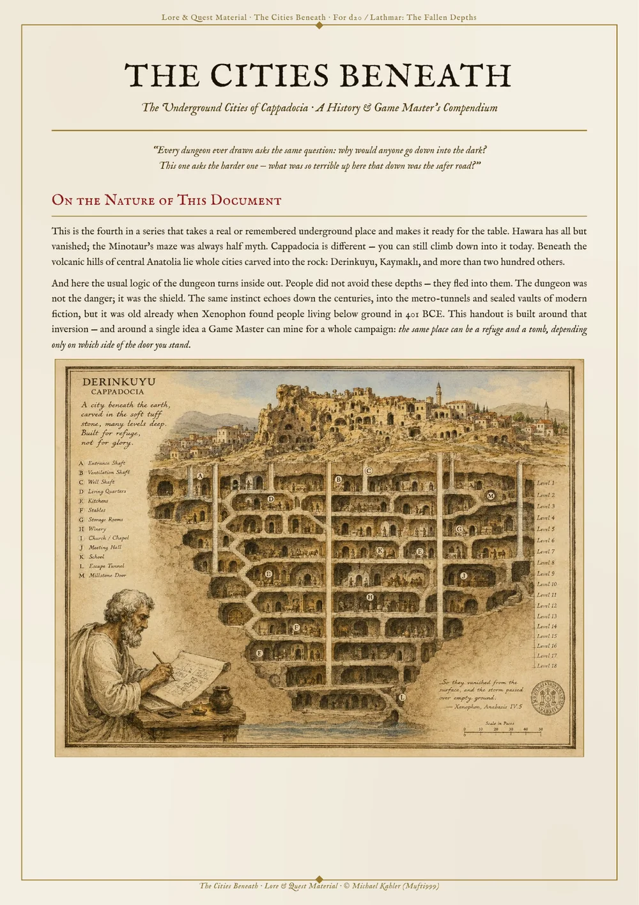
Ancient Mega-Dungeons IV
Cappadocia's underground cities as refuge, machine, and dungeon, with historical context, campaign hooks, survival pressures, and deep-city encounters.
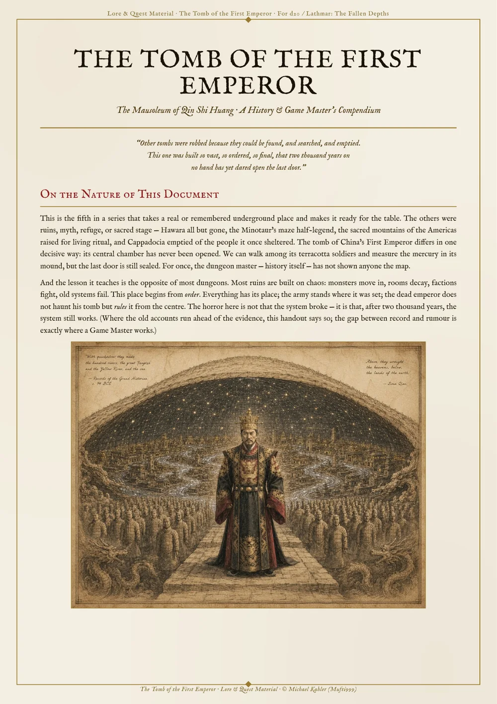
Ancient Mega-Dungeons V
The unopened mausoleum of Qin Shi Huang recast as a dungeon of perfect order, with historical context, rival expeditions, traps, hooks, and omens.
Four adventures from Michael Kahler’s essay on Freyr. Each booklet includes the rules for its gift or transformation.
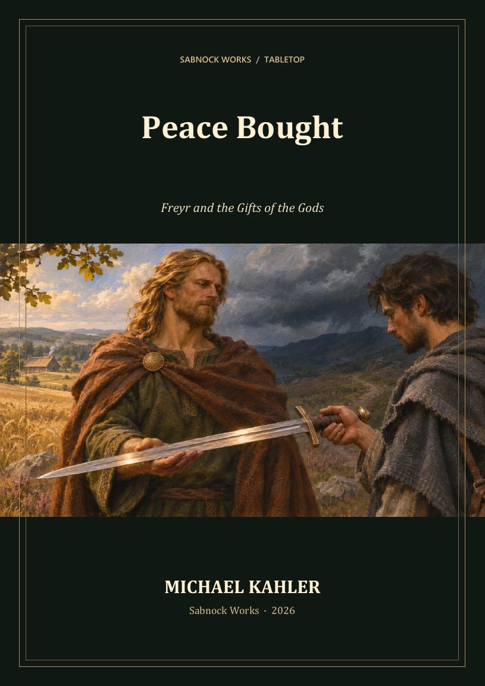
Erkaufter Frieden
A princess gave an enemy commander her sword in exchange for the prisoners he held. Years later, she dreams of a blow falling at her city gate and asks the party to bring the sword back.
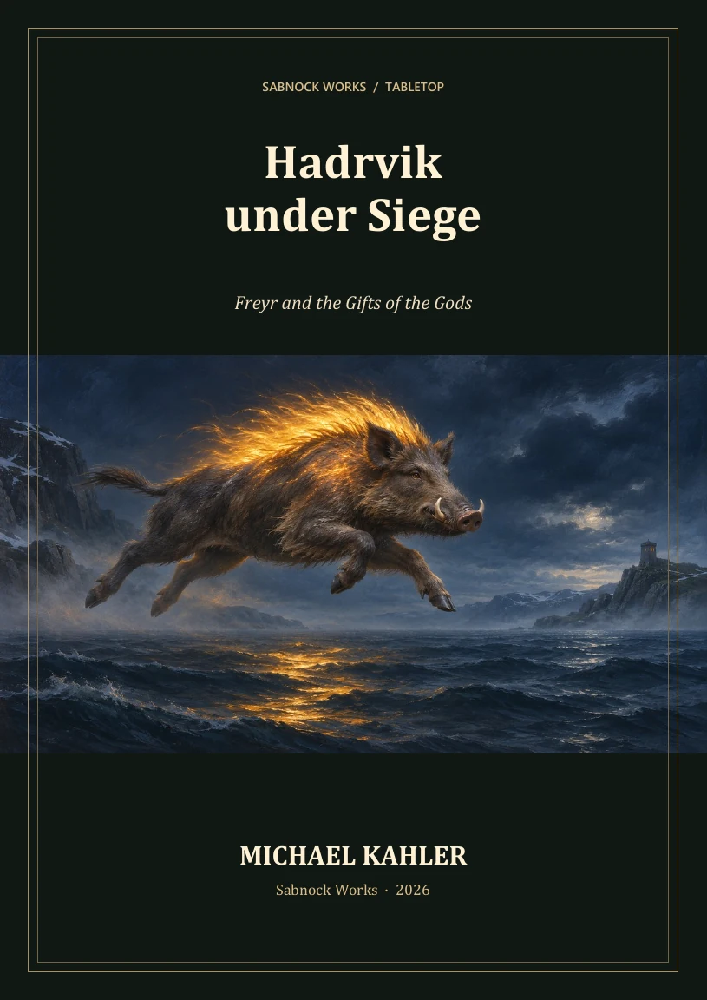
Der belagerte Turm von Hadrvik
Relief is three days away. Gullinbursti can bring supplies to Hadrvik’s coastal tower and carry the wounded out, if the party can keep his golden bristles from giving away the route.
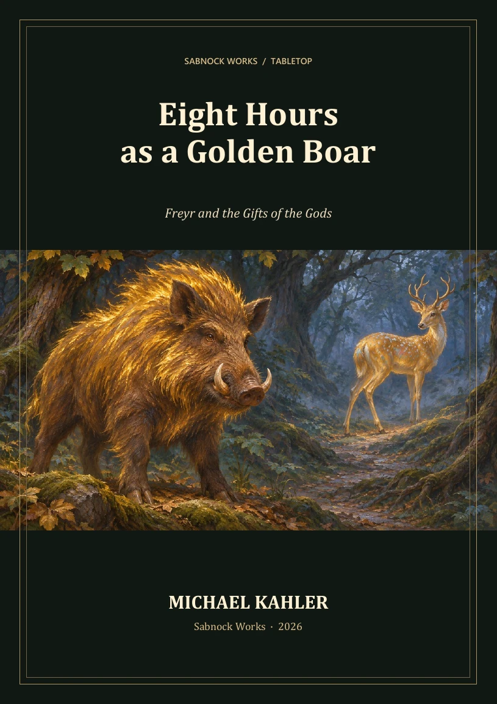
Acht Stunden als goldener Eber
One hero becomes a golden boar to lure a collector away from his archive. The bailiff holds the only potion that can restore the hero, and it must be drunk within eight hours.
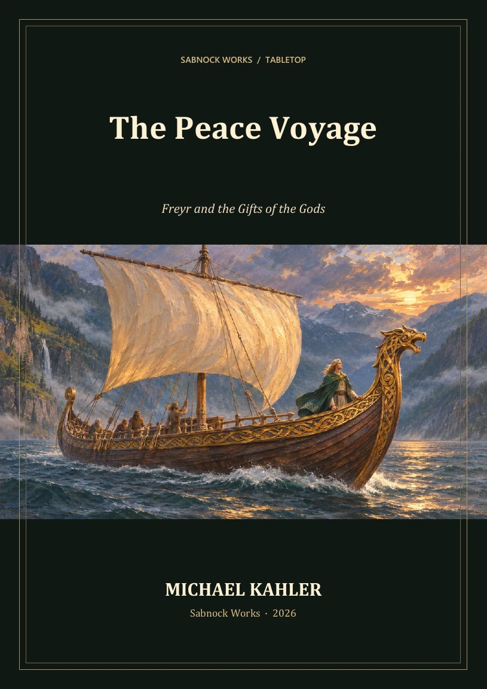
Die Friedensfahrt
Two delegations share Freyr’s ship on the way to peace talks. A blocked strait leaves them a choice about what to carry over the pass and whom to trust.
More material to come
Each entry remains a self-contained download, ready to bring to the table, annotate, or adapt for a different world.